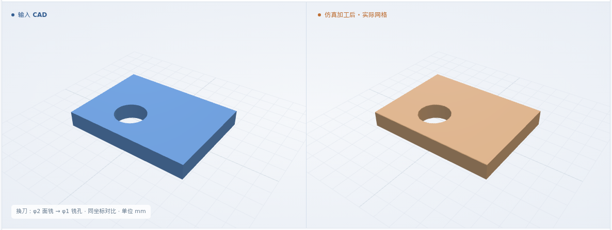
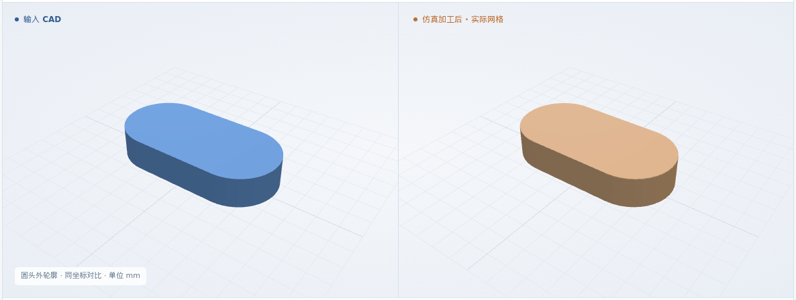
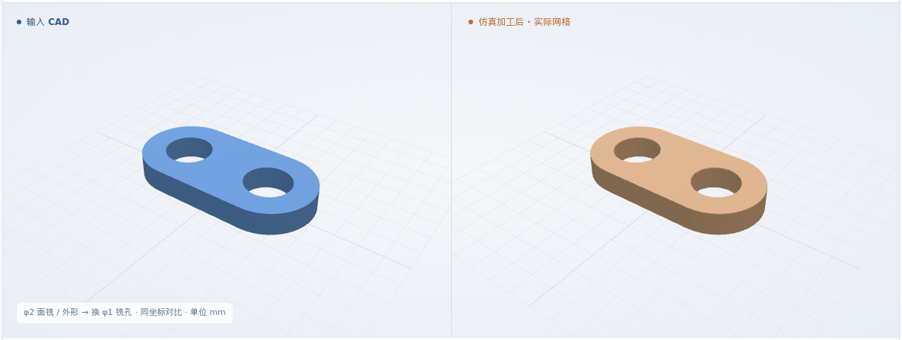
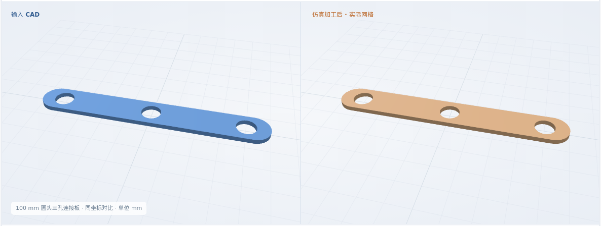

多工序与原尺寸验证
9 组结果 · 30 个用例从单项外形到组合加工，再到 100 mm 参考件。选一组查看 IoU、形状、回放与模块验收。
流程接入验证
尺寸要求贯穿加工与检验
四个已有小型零件重新执行完整流程；查看自动尺寸报告、IoU、形状及代表例回放。
查看四例结果 →这是下方已有零件的流程复验，不增加正常用例或支持种类的计数。
夹具与刀柄干涉
1 个已有零件、5 种夹具配置：1 例完整加工，3 例干涉及 1 例净空待判定拦截。
查看全部五种配置、加工形状与回放 →这是已有零件的资源验证；不增加下方加工特征分组的计数。
面铣与孔的衔接
同一 Job 连续加工，检查顺序与换刀
4 个验证用例 · 5 个错误 NC 反例
小型合成件 · 通用 XYZ · 6061-T6 标签
查看这类全部结果 →圆头外轮廓
从矩形来料清除四角，形成完整外形
4 个验证用例 · 4 个错误 NC 反例
小型合成件 · 通用 XYZ · 6061-T6 标签
查看这类全部结果 →厚度、外形与孔组合
组合前三类动作，逐工步检查实际剩料
4 个验证用例 · 4 个错误 NC 反例
小型合成件 · 通用 XYZ · 6061-T6 标签
查看这类全部结果 →型腔与孔组合
检查腔底孔、换刀，以及卡片规定的先孔后腔
4 个验证用例 · 5 个错误 NC 反例
小型合成件 · 单一圆角型腔 · 通用 XYZ
查看这类全部结果 →多型腔与腔底孔
独立检查各腔深度、底面及孔，支持交错工步与重复换刀
4 个验证用例 · 4 个错误 NC 反例
三种合成 CAD · 四份卡片 · 两个分离型腔
查看这类全部结果 →工件零点与装夹位置
改变零点和装夹坐标，仍与原 CAD 比较
4 个验证用例 · 4 个配置 / NC 反例
小型合成件 · XYZ 平移 · G54 / G55
查看这类全部结果 →静态刀长补偿与换刀
分开声明实装刀长和 H 表，检查换刀净空与剩料
4 个验证用例 · 4 个配置 / NC 反例
两种合成 CAD · 四种刀补设置 · 毫米 XYZ
查看这类全部结果 →100 mm 矩形三孔板
扩大尺寸，保持面铣与三个孔的精检
1 个验证用例
原尺寸软件参考 · 矩形外形 · 6061-T6 标签
查看这类全部结果 →100 mm 圆头三孔连接板
新增 7 项尺寸检查：长、宽、端部半径、孔距与边距
1 个验证用例
图纸派生单件 · 圆头外形 · T1 紫铜标签
查看这类全部结果 →共 30 个正常用例、30 个反例（NC 或加工配置）。材料仅为标签；各页分别说明已验证和未覆盖的要求。
S4 尚未全部完成
接下来扩展型腔交互、更多夹具形状与刀补模式，再补齐真实卡片的资源与验收要求。
阶段验收范围
工序顺序、材料连续性与偏置语义正确；改变一个配置能产生可解释的验收差异。
当前为软件几何验证，真实拼板、整张工艺卡和生产批准尚未完成。